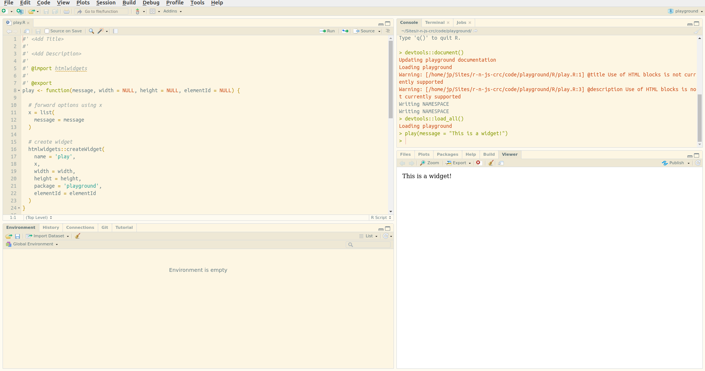
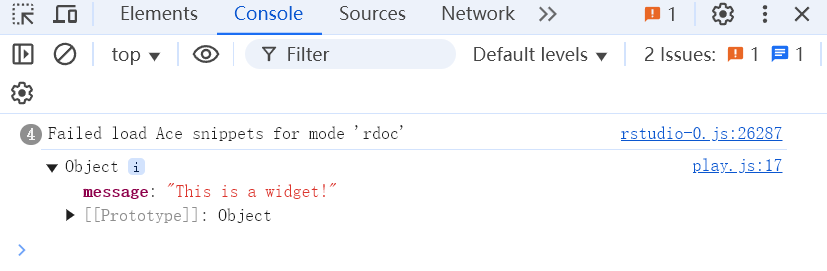
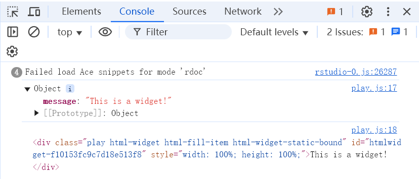
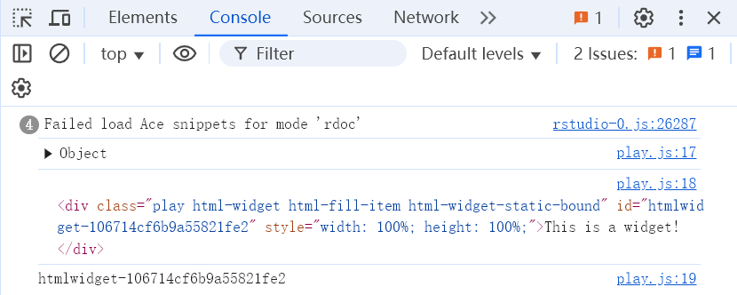
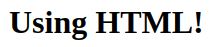
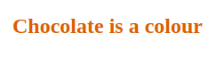

flowchart LR
subgraph i1[R]
A["play(id)"]
end
subgraph i2[HTML]
B["<scipt data-for=id>"]
C["dependencies(play.js)"]
D[JavaScript]
E["<div class=play id=id>"]
B-->|import|D
C-->|use|D
D-->|Generate viz|E
end
A-->|id|B
A-->|id and class|E
style i1 fill:#FFF
style i2 fill:#FFF
05 Your First Widget
The Scaffold
通过R包的形式创建widget可以使事情变得简单一些，下面我们以一个playgroundR包例，创建一个widget。
首先使用usethis::create_package()创建一个R包。
usethis::create_package("playground")使用htmlwidgets::scaffoldWidget()函数自动创建一个widget脚手架——“play”：生成play.R，play.js，play.yaml三个文件。你可以在一个包中使用该函数创建多个widget。
play.R脚本中定义了三个函数：
play()：widget的核心API。render*()：在shiny服务器中处理widget的函数。*output()：在shinyUI界面处理widget的函数。
.js脚本包含生成可视化结果的JavaScript函数。
htmlwidgets::scaffoldWidget("play")生成R包说明文档并加载函数，此时已经可以初步使用“play”widget了（虽然此时只能显示文本信息）。
devtools::document()
devtools::load_all()play(message = "This is a widget!")
在Rstudio中，你可以点击“Viewer”中的 ，在浏览器中打开生成的网页，然后使用浏览器调试工具进行调试，十分方便后续开发。同样地，在vscode中，你可以使用
，在浏览器中打开生成的网页，然后使用浏览器调试工具进行调试，十分方便后续开发。同样地，在vscode中，你可以使用htmlwidgets::saveWidget()函数将widget保存为HTML文件，然后在浏览器中进行调试。
The HTML Output
下面是上面play("This is a widget!")生成的html文件中body标签的内容。生成内容的逻辑同上一章的内容。
<div id="htmlwidget_container">
<div
id="htmlwidget-c21cca0e76e520b46fc7"
style="width:960px;height:500px;"
class="play html-widget">
This is a widget!
</div>
</div>
<script
type="application/json"
data-for="htmlwidget-c21cca0e76e520b46fc7">
{"x":{"message":"This is a widget!"},"evals":[],"jsHooks":[]}
</script>上面的html源码中，div元素由play()函数创建，它的class属性与widget（play）相关，id属性由elementId参数指定，如果没有指定，则生成随机id。script中JSON数据的x与play()函数中的x参数一致。
# specify the id
play("This is another widget", elementId = "myViz")<!-- div bears id specified in R -->
<div id="myViz"
style="width:960px;height:500px;"
class="play html-widget">
This is another widget
</div>仔细观察script，会发现它的data-for属性与elementId相关。
<script type="application/json"
data-for="myViz">
{"x":{"message":"This is a widget!"},"evals":[],"jsHooks":[]}
</script>JavaScript Files
htmlwidgets::scaffoldWidget("play")自动生成的play.js文件包含以下内容：
HTMLWidgets.widget({
name: 'play',
type: 'output',
factory: function(el, width, height) {
// TODO: define shared variables for this instance
return {
renderValue: function(x) {
// TODO: code to render the widget, e.g.
el.innerText = x.message;
},
resize: function(width, height) {
// TODO: code to re-render the widget with a new size
}
};
}
});结合play.R文件中的htmlwidgets::createWidget()内容，我们可以大致将htmlwidgets在创建和渲染的过程描述如下：
factory函数的返回值是两个函数resize和renderValue。前者用来动态调整结果框的大小，后者用来生成结果框，我们先关注renderValue函数。该函数使用参数x中的message值来替代html中的元素el.innerText，其中x.message是JSON格式的提取元素方式，类似R中list的x$message。
你可以在play.js中添加如下代码，并重新加载函数，重新生成网页，然后使用浏览器调试工具查看结果。
// el.innerText = x.message; 后续添加
console.log(x);
el.innerText = x.message;
使用相同的方法，我们可以查看一下el对象的具体信息。
console.log(el);
可以发现，el对象就是play()函数同时创建的div元素。如果你熟悉JavaScript，你可以使用document.getElementById来获取el对象，同时修改元素的位置，颜色，大小等。
// print the id of the element
console.log(el.id);
el.innerText = x.message;
在play.js中使用的innerText只能替换文本，而innerHTML则可以替换任何HTML元素。将el.innerText = x.message;修改为el.innerHTML = x.message;，重新加载函数后运行play("<h1>Using HTML!</h1>")。生成下图：

上面的例子使得play()函数更加灵活，但是使用"<h1>Using HTML!</h1>"未免有些麻烦。好在shiny和htmltools提供了一些工具，使得创建HTML元素更加容易。
html <- shiny::h1("HTML tag")
class(html)
#> [1] "shiny.tag"
# returns string
as.character(html)
#> [1] "<h1>HTML tag</h1>"修改play()函数中对message的处理:
# forward options using x
x = list(
message = as.character(message)
)重新加载函数后，就可以直接使用shiny或htmltools创建的HTML元素作为message了。
play(
shiny::h2("Chocolate is a colour", style = "color:chocolate;")
)
综上，play()函数的内容会通过对象x传递到html中，并被JavaScript解析，然后替换同时由play()生成的div中的内容。